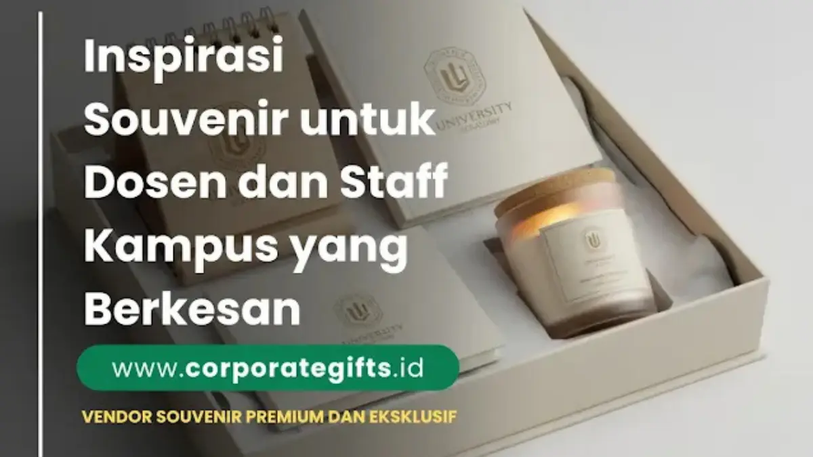

Corporate Gifts ID - Souvenir dosen pembimbing dan staff kampus adalah hadiah apresiasi yang diberikan mahasiswa atau institusi pendidikan sebagai bentuk ucapan terima kasih atas bimbingan, dedikasi, dan pengabdian mereka. Hadiah ini umumnya berupa pulpen metal custom, notebook agenda kulit premium, plakat penghargaan etsa, atau gift set eksklusif yang diserahkan pada momen sidang skripsi, yudisium, wisuda, maupun perayaan penghargaan dosen berprestasi.
Memberikan souvenir kepada dosen pembimbing maupun tenaga kependidikan bukan hanya sekadar formalitas akademik, tetapi juga bentuk penghormatan mendalam atas kontribusi mereka dalam mendampingi perjalanan studi. Di banyak perguruan tinggi, cinderamata ini menjadi simbol kenang-kenangan yang mempererat tali silaturahmi antara alumni, dosen, dan institusi almamater.
Poin Kunci Souvenir Dosen & Staff Kampus:
- Nilai Etika & Penghargaan: Mengedepankan rasa hormat dan kesantunan akademik melalui barang yang bermanfaat nyata di lingkungan kerja kampus.
- Personalisasi Elegan: Gravir nama lengkap beserta gelar akademik pada bodi pena metal atau emboss cover buku agenda memberikan kesan eksklusif dan dihargai.
- Kombinasi Fungsional & Estetik: Memadukan perlengkapan harian (seperti tumbler vacuum flask SUS 304) dengan kemasan gift box berpita rapi.
- Kesesuaian Momen Seremonial: Memilih jenis cinderamata yang tepat sesuai konteks agenda, mulai dari kelulusan sidang, wisuda universitas, hingga penghargaan purnatugas.
- Branding Lembaga Terpadu: Menempatkan logo universitas dan fakultas secara proporsional guna memperkuat citra profesional institusi pendidikan tinggi.
1. Makna Pemberian Souvenir untuk Dosen dan Staff Kampus
Pemberian souvenir kampus mencerminkan rasa hormat dan apresiasi terhadap bimbingan ilmiah, kesabaran, serta dedikasi seorang pendidik. Bagi mahasiswa tingkat akhir, hadiah ini sering kali menjadi bentuk ungkapan terima kasih yang paling tulus setelah melalui proses panjang revisi naskah skripsi, tesis, maupun disertasi.
Sementara itu, bagi pihak manajemen fakultas dan rektorat, menyediakan souvenir berkualitas bagi para dosen dan tenaga kependidikan merupakan bagian integral dari strategi employer branding dan budaya apresiasi internal untuk menjaga semangat kerja serta loyalitas staf akademik.
2. Inspirasi Souvenir Dosen Pembimbing yang Berkesan
Memilih hadiah untuk dosen memerlukan kejelian agar tetap sopan, bernilai guna, dan tidak menimbulkan kesan berlebihan. Berikut adalah beberapa kategori inspirasi cinderamata yang paling direkomendasikan:
a. Souvenir Edukatif dan Profesional
- Pulpen Metal Eksklusif: Pulpen berbahan logam dengan ukiran laser gravir nama dosen dan gelar akademik adalah pilihan klasik nan elegan yang senantiasa digunakan saat memeriksa berkas atau menandatangani dokumen penting.
- Notebook Premium Custom: Buku agenda cover kulit sintetis PU dengan emboss logo kampus atau inisial nama memberikan nuansa prestisius bagi aktivitas mencatat harian.
- Executive Gift Set Edukasi: Paket gift box terpadu yang memadukan buku catatan, pulpen metal, dan USB flashdisk kartu berlogo resmi universitas.
b. Souvenir Personal dan Estetis
- Plakat Ucapan Terima Kasih: Plakat kayu jati atau akrilik bening dengan ukiran kata-kata apresiasi tulus serta tanggal sidang kelulusan.
- Desk Organizer & Aksesoris Meja: Tempat alat tulis multifungsi berbahan kayu atau kulit PU yang mempercantik tata letak meja kerja dosen di ruang kantor.
- Cinderamata Sentuhan Lokal: Produk kerajinan bernuansa etnik seperti kain batik tulis mini, pouch kulit lokal, atau tumbler beraksen motif khas daerah almamater.
c. Souvenir Eksklusif dan Premium
Untuk agenda seremonial tingkat rektorat, apresiasi dekanat, atau perpisahan dosen senior, beberapa pilihan produk berstandar VIP mencakup:
- Tumbler Stainless SUS 304: Vacuum flask tahan panas berlogo universitas dengan sistem penahan suhu 12 jam.
- Power Bank Wireless Fast Charging: Perangkat pengisi daya portabel dengan sentuhan grafir nama dosen untuk menunjang mobilitas saat seminar luar kota.
- Executive Leather Briefcase: Tas dokumen kulit berkualitas tinggi untuk membawa laptop dan berkas perkuliahan.

Paket perlengkapan kerja fungsional dan merchandise elegan sebagai cinderamata resmi sivitas akademika kampus.
3. Rekomendasi Souvenir Berdasarkan Acara Kampus
Setiap momen akademik menuntut tingkat formalitas dan kemasan hadiah yang berbeda. Tabel berikut merangkum rekomendasi cinderamata ideal berdasarkan jenis agenda di lingkungan kampus:
| Jenis Acara Kampus | Rekomendasi Souvenir Pilihan | Karakteristik & Nuansa Pemberian |
|---|---|---|
| Sidang Skripsi / Tesis | Pulpen metal grafir nama & notebook kulit PU | Personal, santun, bernilai guna praktis di meja kerja dosen. |
| Wisuda & Yudisium | Frame ucapan terima kasih & executive gift set | Penuh makna kenang-kenangan dan mempererat ikatan alumni. |
| Penghargaan Dosen Berprestasi | Plakat penghargaan akrilik/kayu & tas kerja premium | Formal, membanggakan, dan menjadi simbol prestasi institusi. |
| Gathering & Apresiasi Staff | Tumbler stainless steel & desk organizer custom | Fungsional harian, meningkatkan motivasi kerja tenaga kependidikan. |
| Akreditasi & Kemitraan Kampus | Paket merchandise institusi (tas, lanyard, mug, pin logam) | Representasi wibawa almamater dan sarana diplomasi akademik resmi. |
4. Tips Memilih Souvenir Kampus yang Tepat
Agar cinderamata yang diberikan berkesan mendalam dan diterima dengan penuh sukacita, perhatikan empat pertimbangan penting berikut:
- Sesuaikan dengan Karakter Penerima: Kenali preferensi dosen atau staf, apakah mereka menyukai benda fungsional meja kantor, barang bernuansa teknologi, atau memorabilia simbolis.
- Fokus pada Kualitas Bahan dan Kemasan: Hadiah berkesan tidak selalu berharga fantastis. Kerapian jahitan, kehalusan finishing grafir, dan penggunaan hardbox berpita mewah mampu mengangkat nilai persepsi produk secara signifikan.
- Sematkan Identitas Visual Kampus: Tambahkan logo universitas atau fakultas secara proporsional agar cinderamata memiliki kebanggaan kelembagaan tersendiri.
- Sertakan Sentuhan Personal: Lampirkan kartu ucapan bertuliskan tangan atau grafir nama lengkap dosen agar hadiah terasa eksklusif dan dibuat khusus untuk beliau.
5. Manfaat Strategis Souvenir untuk Citra Kampus
Selain menjadi media ekspresi rasa terima kasih, penyediaan merchandise dan souvenir kampus berkualitas tinggi memberikan keuntungan strategis jangka panjang:
- Penguatan Citra Almamater: Menampilkan universitas sebagai lembaga profesional dengan tata kelola branding yang teratur di hadapan publik dan asesor.
- Meningkatkan Retensi dan Loyalitas Tenaga Pendidik: Menunjukkan kepedulian institusi terhadap dedikasi harian para staf dan pengajar.
- Membangun Jejaring Alumni yang Kuat: Mempertahankan ikatan emosional antara lulusan baru dengan dosen pembimbing pasca kelulusan.
6. Integrasi dengan Paket Hampers Akademik
Bagi mahasiswa atau panitia wisuda yang menginginkan konsep lebih megah, mengintegrasikan souvenir ke dalam paket hampers untuk dosen pembimbing adalah pilihan yang sangat populer. Di dalam satu hardbox bertali pita, Anda dapat menyatukan tumbler premium, pulpen metal grafir, notebook kulit, dan sebotol madu alami atau kudapan sehat.
Kesimpulan: Momen Apresiasi yang Bermakna
Souvenir untuk dosen dan staff kampus bukan sekadar barang kenang-kenangan biasa, melainkan wujud rasa hormat yang sarat makna moral dan etika akademik. Melalui pemilihan produk yang berkualitas, fungsional, dan dikemas secara elegan, Anda tidak hanya memberikan hadiah, tetapi juga menciptakan momen penghargaan yang membekas indah dalam ingatan.
Rencanakan kebutuhan souvenir dan gift set kampus Anda bersama CorporateGifts.ID. Kami menyediakan layanan kustomisasi logo universitas, mockup digital gratis, dan pengiriman aman bergaransi ke seluruh wilayah Indonesia.